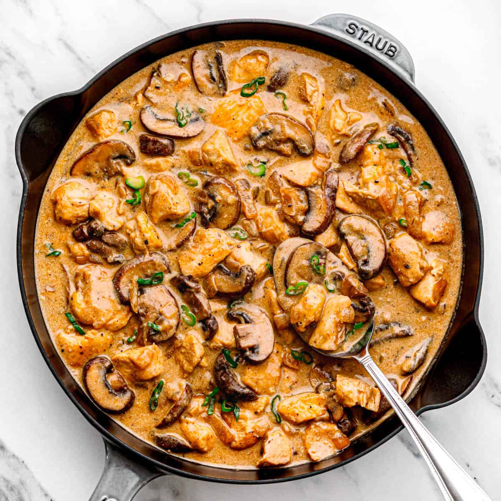

Stroganoff de Pollo
La receta de la abuela. Perfecto para acompañar con arroz o incluso pasta. Perfeccionado por Fabri para la mejor consistencia y el mejor sabor.
Ingredientes
- Una suprema de pollo
- Una cebolla grande
- Mostaza
- Vino o Cognac
- 4 Cucharadas Pulpa de tomate
- 1 lata de Champiñones
- 3 Cucharadas Maicena
- 1 taza de Leche
- 250ml de Crema de leche